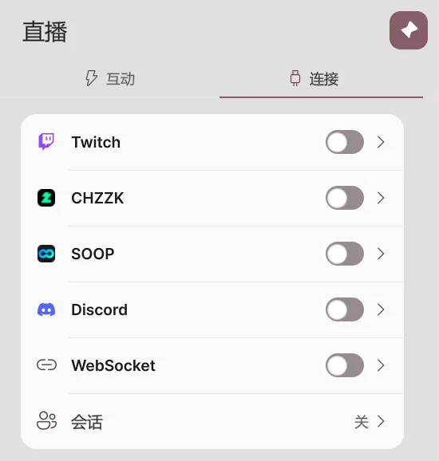
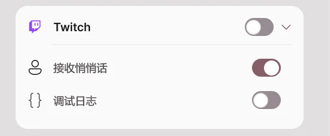
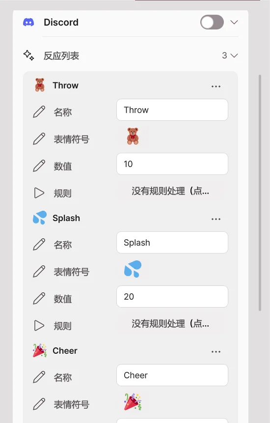
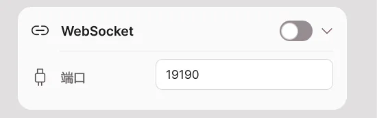

直播联动
2.2.0 新增功能，2.1.2 及更早版本中没有。
接收 Twitch·CHZZK·SOOP 的观众事件和 Discord 朋友的反应，让角色做出反应。直播联动是 Pro 功能，目前为测试版 (Beta)。在实际直播中遇到问题时，请通过错误报告告诉我们。
直播页面有两个选项卡。
| 选项卡 | 作用 |
|---|---|
| 互动 | 设置事件到来时要做什么。包括简易设置、节点编辑器、倒下·打赏显示·测试。 |
| 连接 | 连接平台账号和 Discord 频道，并开启 WebSocket 与远程联播会话。 |

连接 Twitch · CHZZK · SOOP
- 打开直播 → 连接。
- 打开要连接的平台的开关。
- 在浏览器打开的平台登录页面中，用自己的直播账号登录并允许权限。
- 卡片上显示已连接后，就可以接收事件了。

| 平台 | 可接收的事件 |
|---|---|
| Twitch | 频道积分兑换、聊天、关注、订阅（含赠送·订阅留言）、Bits、突袭、热度列车、悄悄话 |
| CHZZK | 聊天、赞助（聊天赞助·视频赞助）、订阅 |
| SOOP | 聊天、星气球、广告气球、视频气球、贴纸、订阅、礼物 |
关闭开关后不再接收事件。已保存的登录信息和规则不会被删除。开启调试日志后，收到的事件会详细记录在诊断日志中。
Twitch·CHZZK·SOOP 登录会经由 Avatar Live 服务器（
stream-auth.erp.pictures）完成连接。登录信息只保存在你自己的电脑上，服务器不会保留。
连接 Discord
不看直播的朋友，也可以在 Discord 频道里用按钮或 /反应 命令让角色动起来。仅在 Avatar Live 应用运行时有效。

1. 添加 Discord 应用
打开添加 Avatar Live Discord 应用，选择要添加到的位置。应用只请求命令（applications.commands）权限，不会读取消息，也不会管理服务器。
| 添加到 | 适用情况 |
|---|---|
| 添加到服务器 | 在自己的 Discord 服务器频道中使用。需要服务器管理权限。朋友们无需安装任何东西。 |
| 添加到我的账号 | 没有服务器或在群组私信中使用。要在群组私信中直接输入命令，那位朋友也需要把应用添加到自己的账号。没有安装的朋友可以点我发出的按钮。 |
2. 连接频道
- 在应用中打开直播 → 连接 → Discord 开关。
- 点击生成连接码。8 位代码会显示 10 分钟。
- 在要连接的 Discord 频道中选择
/连接命令，在代码栏中填入该代码并发送。 - 应用中弹出“连接 Discord 频道”窗口后，确认服务器和频道名称，然后点击连接。
- 该频道会出现在已连接的频道列表中。
代码只能使用一次。已被他人连接的频道无法连接。
3. 发布反应按钮
- 在已连接的频道中发送
/面板。反应列表中的反应会以按钮形式发出。 - 朋友点击按钮或用
/反应选择反应后，处理该反应的规则就会运行。 - Discord 消息中会显示谁做了什么。
在反应列表中为每个按钮设置名称·表情符号·数值·规则。数值是规则的最小·最大个数条件所看的数。点击规则会依次切换规则，所选规则的 Discord 反应触发会被开启。
Discord 命令
| 命令 | 谁 | 作用 |
|---|---|---|
/连接 代码: |
我 | 把此频道连接到我的 Avatar Live。 |
/断开连接 |
我·服务器管理员 | 断开此频道的连接。 |
/面板 |
我·服务器管理员 | 发出反应按钮。群组私信中也可以。 |
/反应 |
朋友 | 选择一个反应。不选时为第一个反应。 |
/积分 /签到 /赠送 /排行榜 |
朋友 | 查看、收集和分享积分游戏的积分。 |
/轮盘 /老虎机 /高低牌 /二十一点 /对决 /预测 /抽奖 /赛跑 /问答 /首领战 |
朋友 | 积分游戏的小游戏。 |
Discord 客户端语言为英语时，命令也会显示为 /link、/unlink、/panel、/react 等英文名称。
积分游戏的规则和积分数值在 Discord 卡片的积分游戏中设置。积分按频道保存在这台电脑上。
Discord 与应用之间由开发者服务器（
discord-check.erp.pictures）转发。朋友的 Discord 名称和头像会传到我的应用，用于显示和贴纸。应用不会自行在 Discord 上发帖，只回应朋友的命令。
WebSocket

让其他程序在这台电脑内与 Avatar Live 互相收发事件。默认关闭，端口为 19190。只有同一台电脑上的程序可以通过 ws://127.0.0.1:端口 连接。收发的内容用节点编辑器的 WebSocket 节点处理。
Basic 与 Pro
| 功能 | Basic | Pro |
|---|---|---|
| 查看直播页面 | 可以 | 可以 |
| 平台·Discord·WebSocket 连接 | 锁定 | 可以 |
| 简易设置·打赏显示·测试 | 锁定 | 可以 |
| 节点编辑器 | 仅查看·平移·缩放 | 编辑·运行 |
在 Basic 中，已保存的登录信息·规则·图也不会被删除，而是以锁定状态保留。